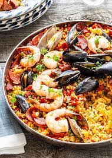
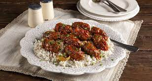

Foods We Provide
- Falafel
- Ratatouille
- Paella 
- Tapanade
- Soutzoukakia 

falafel—a renowned vegetarian dish made from a blend of mashed chickpeas, herbs, and spices. These small, deep-fried patties are believed to have ancient Egyptian origins, evolving from lava beans to chickpeas, and are now enjoyed in salads, pita sandwiches, and with flavorful dips in Mediterranean cuisine

Ratatouille, a renowned vegetable stew integral to French cuisine, hailing from Nice. Featuring a tomato base enriched with eggplant, peppers, and zucchini, this dish is prepared with garlic, onion, and a medley of herbs, often cooked slowly to achieve a luscious texture and melded flavors.
Paella dish uniting meats, vegetables, and distinctive rounded rice, introduced by Middle Eastern settlers in the 10th century and evolved in 19th-century rural Valencia. Cooked slowly in large, shallow pans over open flames, paella's charm lies in its communal preparation, featuring golden rice cooked in olive oil, seasoned with saffron and rosemary, while seafood joined the traditional rabbit, chicken, and duck over time, fostering a unifying and delectable Mediterranean tradition.

Mediterranean cuisine's robust and vibrant essence is exemplified by tapenade, a classic from Provence, France. This savory spread, crafted from chopped black olives, capers, and anchovies, joined by elements like lemon juice, olive oil, garlic, and herbs, holds a rich history and versatility; it's enjoyed on bread, pasta, salads, and more, echoing the harmonious pairing of its ingredients since Roman times.
While meatballs are common across various cuisines, Greek soutzoukakia stand out due to their Mediterranean-inspired flavor, oblong shape, and unique cooking process. These meatballs, crafted from beef or a mix with spices like cumin and cinnamon, are fried then simmered in a tomato-based sauce, creating a harmonious blend of Levantine, Mediterranean, and European indulgence, also seen in Turkish and Cypriot cuisines.
This are the some of the foods we provide. There are many more ,So don't forget to vist us;)
About us
Origin
Based in Chicago, Illinois, Little Lemon is a family-owned Mediterranean restaurant, focused on traditional recipes served with a modern twist. The chefs draw inspiration from Italian, Greek, and Turkish culture and have a menu of 12–15 items that they rotate seasonally. The restaurant has a rustic and relaxed atmosphere with moderate prices, making it a popular place for a meal any time of the day.
Founders
Little Lemon is owned by two Italian brothers, Mario and Adrian, who moved to the United States to pursue their shared dream of owning a restaurant. To craft the menu, Mario relies on family recipes and his experience as a chef in Italy. Adrian does all the marketing for the restaurant and led the effort to expand the menu beyond classic Italian to incorporate additional cuisines from the Mediterranean region.